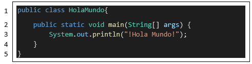
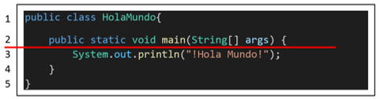
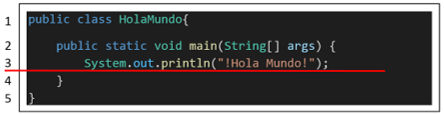

Estructura básica de un programa en Java
Comencemos por comprender la estructura que sigue Java o también llamada su sintaxis, y para eso, haremos el mítico primer programa de “Hola Mundo”, es un programa sencillo que consiste hacer que la computadora imprima en pantalla un mensaje que queramos, en este caso, quiero que escriba ¡Hola Mundo!, un mensaje adecuado para anunciar que nuestro programa está vivo (en forma figurativa), y que nos ayudara a ver la estructura básica de un programa hecho en Java. Todos comenzamos con un “Hola Mundo” y aquí seguiremos la costumbre.
Ahora vamos a programar, abre tu editor de texto o IDE que escogiste y crea y guarda un nuevo documento llamado “HolaMundo.java” (sin las comillas) y escribe el siguiente código (El coloreado de la sintaxis es gracias al editor de código VSCode):
Ahora toca explicar que hace cada línea; la primera línea lo que hace es crear el objeto HolaMundo para empezar el programa, antes hemos dicho que Java es un lenguaje orientado a objetos y para programar con objetos, hay que crear estos objetos, y esta es la forma de estructurarlos en Java, a través de sus moldes llamados “clases”. Luego profundizaremos en el tema de crear y utilizar bien los objetos y las clases de objetos, pero por ahora, hay que aceptar que la primera línea es la estructura básica para realizar un programa, usando las palabras reservadas “public class” y el nombre de nuestro objeto “HolaMundo”, junto a una llave de apertura ( { ) que posteriormente se cerrara en la línea 5 con una llave de cierre ( } ) y formaran un bloque de código.
Algo a recalcar es que, al crear un objeto, su nombre debe ser el mismo que del archivo donde se está guardando, por ejemplo, este objeto se llama “HolaMundo” y lo estamos guardando en un archivo llamado “HolaMundo.java”, el archivo se llama igual que el objeto que esta almacenando, junto con la extensión “.java” que indica que es un archivo Java que contiene código Java y que es un archivo que Java puede trabajar.
La línea 2 crea la función main, que es el punto de inicio de nuestro programa, un programa puede tener muchos objetos e instrucciones programadas y la pregunta es: ¿por dónde empieza a ejecutarse?, la respuesta es por el “main” (en español, significa “principal”, por ser la entrada principal por donde empezara a ejecutarse el programa). Tiene varias palabras que no hace falta que sepas aun (y que explicaremos más adelante en el curso), pero que si son necesarias para que se ejecute el programa y deben ser escritas así, como se muestran. Mencionar que también tiene una llave de apertura ( { ) que se cierra en la línea 4 con una llave de cierre ( } ) para delimitar el bloque de código del main.
En la línea 3 (imagen 9) ya podemos colocar comandos para poder programar, y como simplemente queremos imprimir un mensaje en pantalla, con la función “System.out.println” podremos hacerlo, este lleva nuestro mensaje de “¡Hola Mundo!” entre paréntesis ( ) porque así sabe que lo que esta adentro de sus paréntesis es nuestro mensaje y está también entre comillas dobles “ ” para indicarle que es una cadena de texto lo va a imprimir (los textos deben estar entre comillas dobles), además, termina con un punto y coma ( ; ) y esto es así porque cada instrucción o sentencia debe tener el punto y coma para indicar que aquí termina el comando y puede proceder a ejecutarlo, para después pasar al siguiente comando, y así.
La línea 4 y 5 contienen las llaves de cierre para los respectivos bloques de código de la función main y de nuestro objeto HolaMundo, toda llave de apertura que haya debe tener una llave de cierre para indicar donde inicia y donde acaba un bloque de código.
Para efectos educativos, en este curso probaremos una aplicación integrada llamada paiza.io que sirve para compilar y ejecutar código de varios lenguajes de programación (incluye Java) en la propia página web. Aquí puedes experimentar con los códigos que estemos viendo rápidamente, pero no olvides que programar en tu propio entorno con tu IDE o editor de código preferido siempre es mejor.
Si modificas el mensaje y vuelves a ejecutar el código, veras como efectivamente lo compila y ejecuta, juega un poco con el código para ver que más puedes lograr hacer, si deja de funcionar, puedes reinícialo refrescando la página (F5), lo cual es muy practico. Hay que mencionar que el nombre del objeto como el nombre del archivo es Main (con M mayúscula), esto es para que la aplicación integrada ejecute adecuadamente este archivo, pero tu asegurate de nombrar adecuadamente tus archivos y objetos/clases en tu maquina local.